Foundations · Product system · Brand expression
System reference
Themes, elevation, the brand's own graphic language, illustration, and data visualization — the layer that sits on top of the Foundations tokens and gives the system its Cargill identity.
04 / Themes
Light & dark
Sprout supports two display themes that adapt the same component to its surface. Light Mode pairs a bright background with deep text and color for clarity in daylight environments. Dark Mode reverses it with a deep background and high‑contrast text for low‑light viewing and conserves screen energy.
SDS · Token naming hierarchy
sds · Component* · Foundation · Property* · Tier · Modifier*
* denotes levels that can be included for a more detailed mapping of the token. Example: sds-color-background-brand-hover resolves at the global level; sds-button-color-background-primary-hover resolves at the component level.
Global semantic tokens · Light / Dark
| Token | Light Mode | Dark Mode | Use |
|---|---|---|---|
| sds-color-background-page | #FFFFFF | #023719 | Page-level surface |
| sds-color-background-component | #F5F9ED | #03441F | Soft card / panel fill |
| sds-color-background-brand | #00843D | #BDE588 | Primary action surfaces |
| sds-color-background-disabled | #F3F4F3 | #404945 | Disabled control fills |
| sds-color-text-primary | #101C16 | #FFFFFF | Default body text |
| sds-color-text-secondary | #404945 | 85% white | Supporting copy |
| sds-color-text-muted | #707773 | 70% white | Helper / metadata |
| sds-color-text-on-brand | #FFFFFF | #101C16 | Text on brand surfaces |
| sds-color-border-primary | #DBDDDC | 12% white | Default borders / dividers |
| sds-color-text-error | #C50F1F | #F87171 | Error messages |
Side-by-side · same component, two themes
Sprout Project Team
Sprout helps deliver great user experiences to our employees. The same component renders the brand pill, body, and surface from semantic tokens.
9 MembersSprout Project Team
Sprout helps deliver great user experiences to our employees. The same component renders the brand pill, body, and surface from semantic tokens.
9 MembersHow this maps to the page. The styleguide above uses primitive tokens directly (--green-600, --soft-green-50, --neutral-1000). The SDS layer adds a semantic skin (sds-color-background-page, sds-color-text-primary, etc.) that points at the primitives and can swap between Light and Dark in one place. The Side-by-side demo above uses real SDS tokens on the .theme-demo--light and .theme-demo--dark classes; the same markup renders into either theme by swapping a single class.
05 / Elevation
Shadows
Elevation creates a sense of hierarchy, depth, and importance. Use it to signal which elements are interactive, which are in the foreground, and which are secondary. Sprout ships three steps that cover most surfaces.
Applied · same content, three elevations
Title
Pressed surface, sits at the page level.
Title
Lifted card, hovers slightly above the page.
Title
Modal surface, floats well above the page.
09 / Graphic language
Graphic language
The leaf is the brand's primary device — the "front door," used boldly at top level (a hero, a section header, a cover). The rounded box is the secondary device: once inside the branded world, the leaf steps aside for a calmer, less-branded container fit for detailed, repeated content. Built from the graphic-device asset registered in Logo.
Brand canvas · single color graphic
Sprout Design System
Nourishing the world, one interface at a time.
Cargill Brand Development
Building a stronger Cargill brand.
Rounded box · the secondary device
Fact sheet
Detailed, repeated content — the kind that would turn monotonous under the leaf — lives here instead. No leaf, no secondary color; just the calm surface.
Leaf as window · a photo inside the leaf silhouette
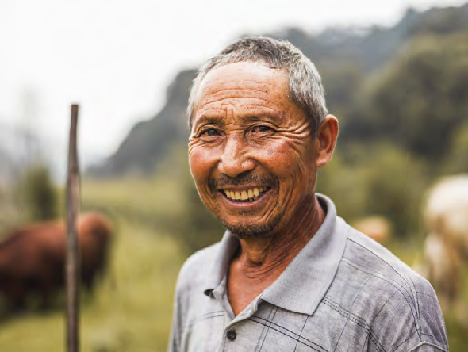
A face behind every field we work in.

Technology meets the field, everywhere we grow.
Leaf over image · the leaf rides on top of a full-bleed photo

Powering our systems, responsibly.

Strong roots, sustainable growth.
Leaf usage · scale, position, color, rotation
- Scale
- 120%–200% of the canvas width. Below 120% the leaf's edges show inside the frame and the sense of growth is lost; above 200% the shape distorts. If neither works, the rounded box above is the fallback.
- Position & cropping
- Both edges of the leaf must extend beyond the canvas — it never terminates inside the frame. At any scale or crop, it must still read as the leaf, not just an abstract curve or wave.
- Color
- Primary palette only — Leaf Green, Deep Green, Soft Green, White Green, or White. Never a secondary color, and never redrawn or recolored outside these five.
- Rotation & reflection
- Free to flip horizontally, vertically, or both. Once flipped, the same rotation limit still applies: 0° to ±22.5° — any more and the layout turns awkward and the leaf loses its shape.
- Transparency
- Used only when it earns its place — never so subtle it might as well be solid, never so faint the leaf disappears. Never over a person or a photo's main subject, and always normal blend mode.
Rotation & reflection · the same asset, three ways
Beyond ±22.5° the shape stops reading as a leaf and starts reading as an arbitrary curve — the same limit applies whether or not it's been flipped first.
Brand photography · the placeholder library
The imagery used across the leaf and card components, grouped by the brand book's own categories — Our people, Our systems, Our world. This is a screen-res stand-in set pulled from the guidelines PDF (see the README); swap for the licensed library when it lands. Hover any asset on this page — a photo, an illustration, or the leaf — and use the button to download it. Logos and brand icons work the same way in Logo and Iconography. Who owns each of these, where the masters live, and what may be generated rather than imported is recorded in Approved assets.

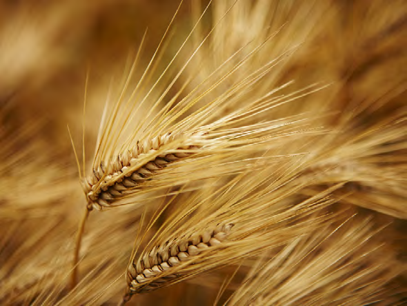
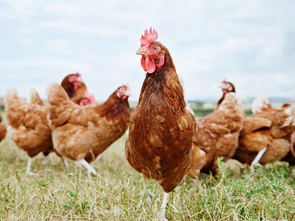
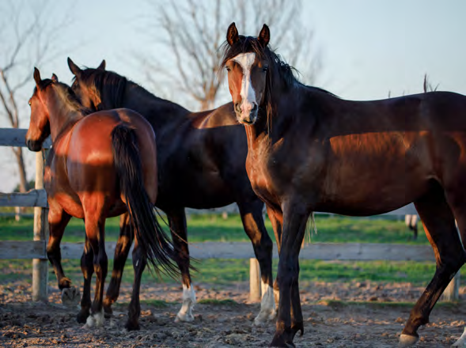
Rounded box · corner-radius formula
The brand ties the radius to the box itself rather than a fixed pixel value: r = 4% of the box's diagonal. Worked example — a 100×100px box has a 141.42px diagonal, so its corner radius is 5.65px; scale the box in any dimension and scale the radius to match. When several rounded boxes appear together (a grid, a row of cards), they must all share one corner radius — boxes may differ in size, but never in roundedness.
Don'ts. Never use the leaf at the secondary level (inside a presentation page, a brochure spread, a fact sheet) — that's the rounded box's job. Never recolor the leaf into a secondary color, warp its shape, or use more than one leaf at once. Never round the secondary box's corners more or less than the formula calls for, and never let a set of boxes shown together use mismatched radii. And never reach for a different graphic language entirely — the retired mosaic pattern, unrelated shapes — this system has exactly one.
10 / Illustration
Illustration & diagrams
Illustration is a functional brand asset, used only when photography won't suffice — abstract concepts, infographics, process diagrams. There is one illustration style across the brand, built from the same primary + secondary palette as everything else in this system; the guidelines are explicit that we never invent our own tints. Diagrams are the functional half of the chapter, fully specified below: line weights, fill treatments, and a worked process-flow example.
Line weights · fixed 1:2 ratio, scale uniformly
.75pt / 1pxDetail line
1.5pt / 2pxPrimary line
Measured on a 1″ / 72px-tall artboard (the same sprout glyph from Iconography, shown here in outline to isolate the stroke). Scaling to 400% scales both weights together — .75pt→3pt, 1.5pt→6pt — never restyle one stroke independently of the rest of the artwork.
Fill treatments · core palette only, no custom tints
Outline only
Dot texture
Diagonal hatch
Solid fill
Process flow · a worked diagram example
01 Intake
Raw material enters the system, unprocessed.
02 Process
Material is refined and combined, mid-system.
03 Output
Finished product moves downstream, complete.
Diagrams do a different job than illustration — clear and concise, not expressive. Fill treatment carries meaning on its own (here, stage of completion) so connectors can stay at the thin, detail line weight and read as structure rather than artwork.
Instructions · diagrams may pull from either palette
01 Locate
Find the component before starting.
02 Align
Line it up with the marked edge.
03 Secure
Fasten until it clicks into place.
04 Confirm
Check for the confirmation indicator.
Diagrams can convey action and instruction more clearly than photography, and — unlike illustration — are free to pull color from either the primary or secondary palette. This sequence uses Rich Red Deep to keep it visually distinct from the process-flow example above.
Alternate colorways · the same diagram, reversed on a brand canvas
Process flow · reversed
Process flow · secondary colorway
The same line-weight and fill-treatment system, rendered in reverse on a solid brand-color canvas — a diagram can sit on a colored background the same way the leaf does, as long as the line weight and fill logic stay identical to the on-white version.
Real diagram examples · imported vector, never redrawn
The process-flow and instruction examples above are the abstract system; these two are the exact worked examples from the guidelines (Illustrations & diagrams, p.107), imported as vector SVG straight from the source file — same "never redraw" rule as everything else pulled from the PDF.
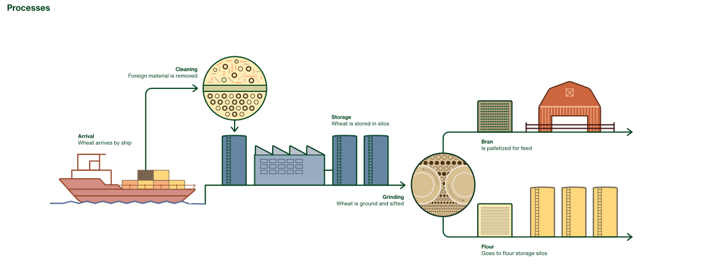
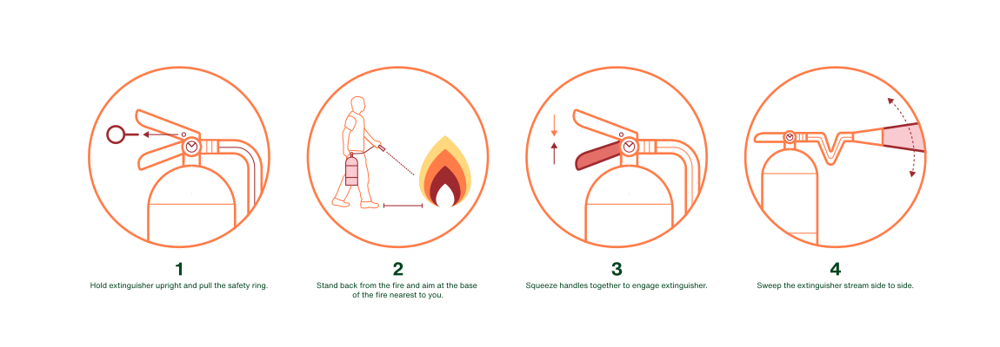
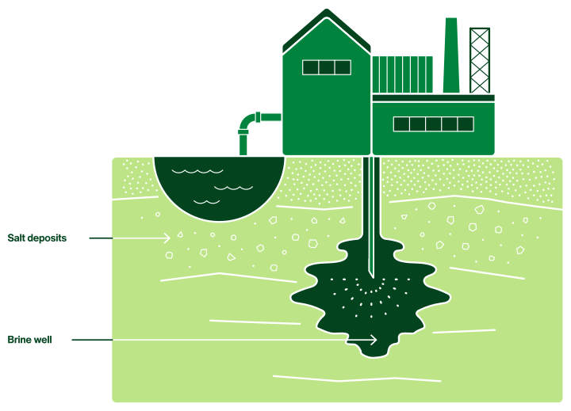
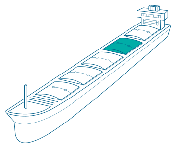
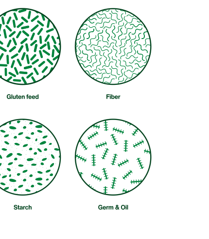
Object illustrations · imported vector, never redrawn
The brand's illustration style is simple and graphic — realistic in scale, never cartoonish. These three are the exact object examples from the guidelines (Illustrations & diagrams, p.100), imported as vector SVG straight from the source file — the same "never redraw" rule the leaf and logo follow.
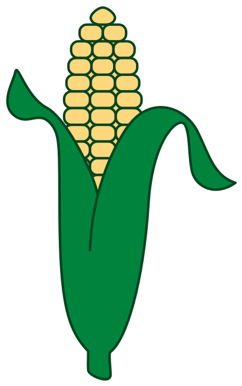
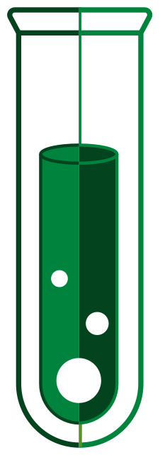
Alt text. Describe the subject and what it stands for — what it shows and why — never "illustration of…" or the filename. If an illustration sits beside text that already says the same thing, mark it decorative with alt="" instead of describing it twice.
Character illustration · asset dependency
People are the one gap. The object illustrations above are imported straight from the guidelines. The brand's human figures, though, are hand-drawn in one approved style with a dedicated skin-tone and hair-colour palette (guidelines p.104) reserved for that use only — not brand colours, and not usable anywhere else. That licensed character library isn't in this repo yet, and the guidelines warn against off-style substitutes, so this system doesn't hand-code stand-in people — the same way brand photography is standing in for a licensed library today. Drop the approved figures in as vector SVG (matching the object illustrations above) once available. The full record — owner, expected format, and the standing instruction not to generate a substitute — is in Approved assets.
07 / Data visualization
Data visualization
Charts lead with green in a fixed order, extend into a whole secondary set only when a data set outgrows six colours, and never ask colour to do the work of a label — data is a functional element, and functionality always takes precedent over colour.
Process · simple data sets
As with the rest of the brand, we lead with green. Always Leaf Green first, followed by Deep Green, then Soft Green, and then tints of the same order. Ensure tints allow enough differentiation between data points, and are visible against the background.
Start with these colours and tints
- 1Cargill Leaf Green100%
- 2Deep Green100%
- 3Soft Green100%
- 4Cargill Leaf Green70%
- 5Deep Green70%
- 6Soft Green70%
Steps 4–6 are the printed 70% tints of steps 1–3 on white, in the same order. Tokens --dv-1 … --dv-6.
Process · complex data sets
For complex data sets we may need to use the secondary colours within the palette. Where possible we still lead with green — or with a secondary colour in certain situations, per the brand-architecture section. If more than six colours are needed, add one of these three colour sets to the green colours and tints.
Set 1 · Blues
RGB 0, 51, 102
CMYK 100, 65, 10, 45
RGB 0, 118, 129
CMYK 96, 9, 32, 29
RGB 188, 237, 255
CMYK 30, 0, 0, 0
RGB 71, 101, 144
CMYK 70, 45, 7, 30
RGB 62, 155, 171
CMYK 67, 6, 22, 20
RGB 210, 236, 252
CMYK 21, 0, 0, 0
Set 2 · Reds & yellows
RGB 158, 42, 47
CMYK 8, 97, 76, 31
RGB 255, 127, 77
CMYK 0, 55, 77, 0
RGB 255, 215, 125
CMYK 0, 10, 50, 0
RGB 228, 110, 103
CMYK 6, 68, 53, 0
RGB 247, 175, 124
CMYK 0, 39, 54, 0
RGB 255, 237, 184
CMYK 0, 7, 35, 0
Set 3 · Earth
RGB 75, 53, 29
CMYK 50, 64, 85, 58
RGB 216, 192, 146
CMYK 16, 21, 47, 0
RGB 146, 133, 106
CMYK 16, 21, 47, 40
RGB 122, 100, 80
CMYK 33, 43, 55, 45
RGB 181, 163, 130
CMYK 16, 21, 47, 20
RGB 202, 191, 188
CMYK 23, 23, 23, 3
Add a set whole, not a colour at a time — each set carries the same three base + three tint structure as the greens. Tokens --dv-blue-1…6, --dv-warm-1…6, --dv-earth-1…6.
Application to data sets
Applying these colour guides to data ensures a clear and legible data set across various levels of complexity. We can range from use of only the primary palette, to expanded use of the secondary palette when either necessary for differentiation, or required for architectural differentiation.
- Volupti17%
- Quoditem33%
- Utectur17%
- Verum8%
- Fuga19%
- Ent6%
- Volupti17%
- Quoditem23%
- Utectur10%
- Verum17%
- Fuga8%
- Ent15%
- Nimil4%
- Susae6%
These demos keep the guidelines' white canvas in both themes — the published values are specified against the printed page, and a 100% Deep Green bar would disappear into a dark card.
Accessibility note
Colour is a brand element, not one that should be used on its own to differentiate data points. Clear labelling and use of spaces between shapes is much more important. Data is a functional element and the functionality should always take precedent over colour.
Mixing colours and changing tints is permissible if accessibility is at all in question. The order above is the starting point, not a constraint that outranks legibility — if two adjacent tints are hard to tell apart at the size a chart actually ships at, change them.